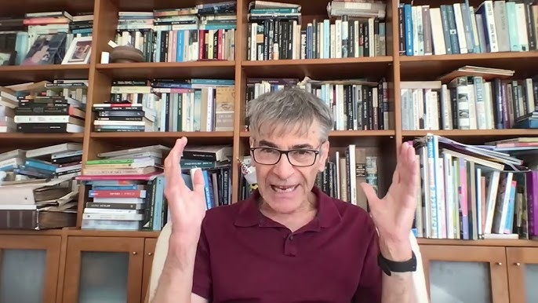

המזרח התיכון והזירה הבינלאומית השתנו בקצב מהיר בשנתיים האחרונות: מלחמות, בריתות שנסדקו, ומעצמות שמזיזות את מרכז הכובד שלהן. קשה לעקוב אחרי זה, וקשה עוד יותר לגבש דעה מבוססת.
כאן מרוכזים ראיונות עומק שקיים ד"ר מיכאל מירו עם פרופ' בני מילר, חוקר יחסים בינלאומיים מאוניברסיטת חיפה. כל ראיון נמשך כשעה. התמלילים עובדו בעזרת מודל שפה (Gemini Pro) וסודרו לכדי מאמרים קריאים, כדי שאפשר יהיה לקלוט את עיקרי הדברים בכמה דקות במקום לשבת מול שלוש שעות וידאו.
העמדות המוצגות הן של פרופ' מילר, והן ניתוח אחד מני רבים — לא תמונה מוסכמת ולא סיכום ניטרלי. לכל מאמר מצורף קישור לראיון המקורי, ומי שהנושא מעניין אותו מוזמן לצפות בו במלואו.
ניתוח המערכה מול איראן והשפעתה על מאזן הכוחות העולמי. המאמר סוקר כיצד סין ורוסיה מנצלות את הסטת הקשב האמריקאי, את הקרע המעמיק בתוך ברית נאט"ו מול אירופה הליברלית, ואת שורשי חוסר היציבות במזרח התיכון – איראן הריביזיוניסטית מול מדינות כושלות.
לקריאת המאמר המלא ←בחינת שקיעתו של "המערב" כגוש מלוכד תחת הדוקטרינה של הנשיא טראמפ. המאמר מנתח את הפוליטיקה של העסקאות, את נטישת אוקראינה, ואת היווצרותו של "מחנה טראמפיסטי" עולמי חדש. בנוסף, מוצגות ההשלכות הדרמטיות והסכנות לישראל עקב תלות היתר בארה"ב והפניית העורף לאירופה.
לקריאת המאמר המלא ←מבט היסטורי-אסטרטגי על כשלי מדיניות החוץ האמריקאית והמערבית. כיצד הניסיון לכפות דמוקרטיה בעיראק ושינויי משטר מהאוויר הולידו, באופן פרדוקסלי, את חזבאללה, החות'ים ודאע"ש, וכיצד גלי ההגירה והטרור מתדלקים את עליית הפופוליזם המאיים על הדמוקרטיות מבפנים.
לקריאת המאמר המלא ←הסדרה מתעדכנת באופן שוטף עם ניתוחים וראיונות חדשים מזירת היחסים הבינלאומיים.